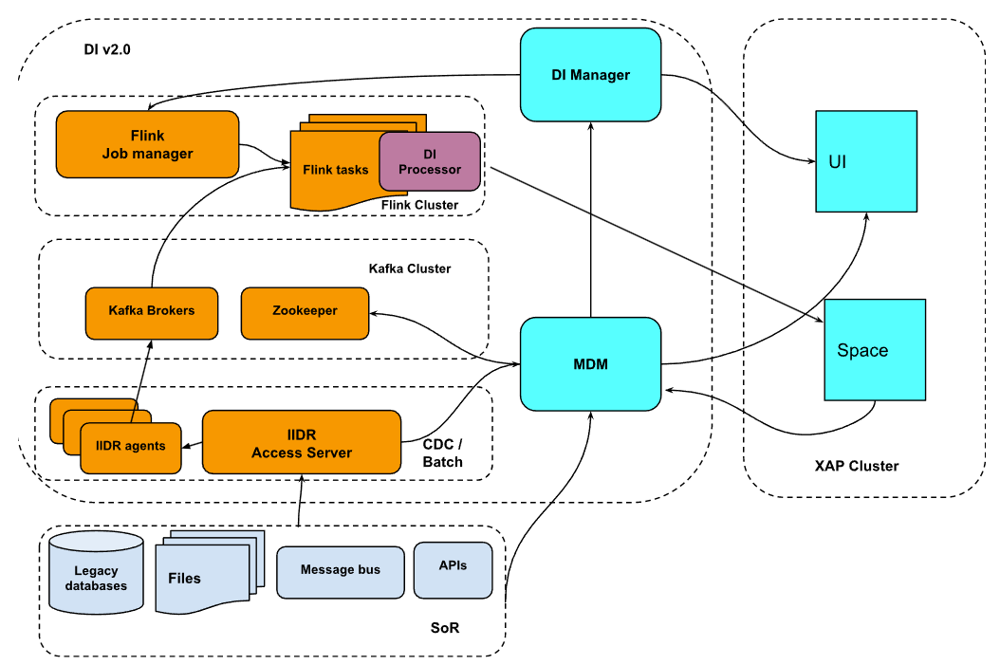
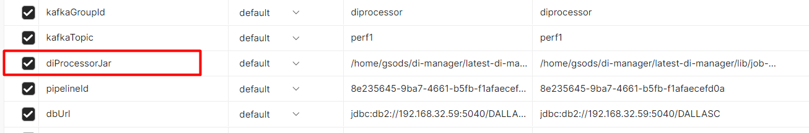
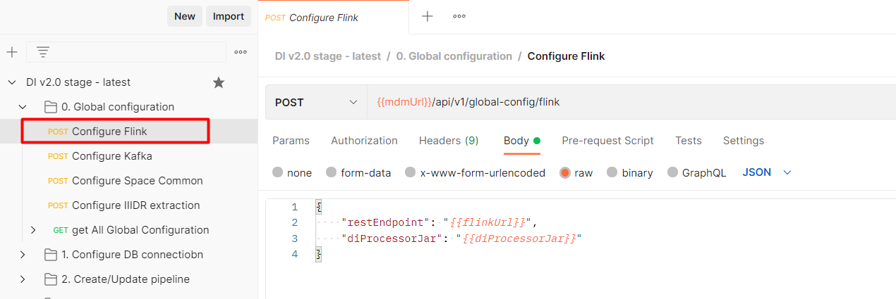
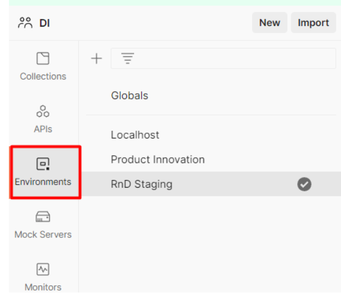
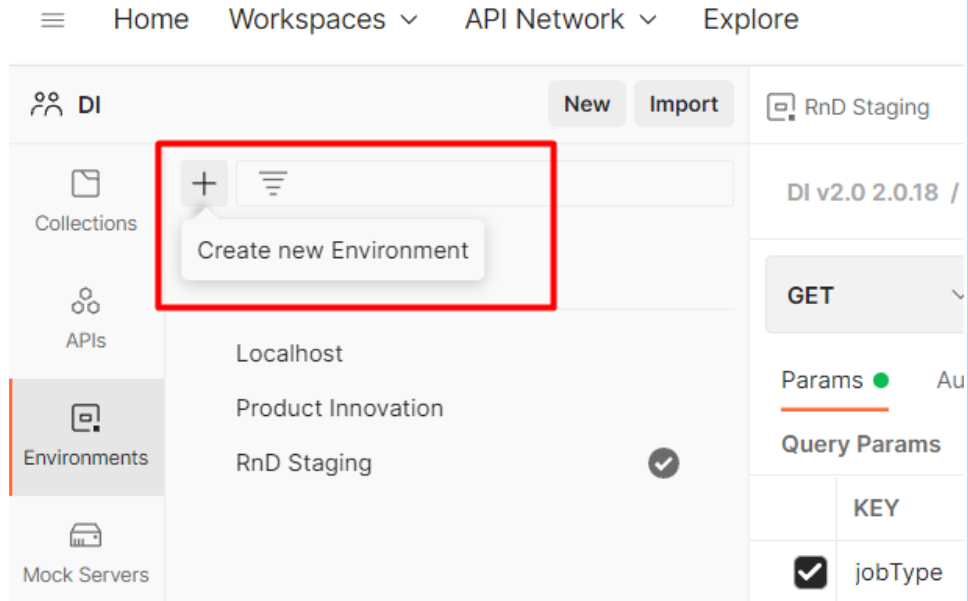
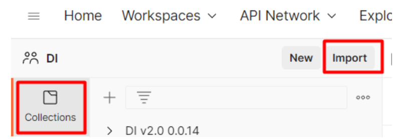
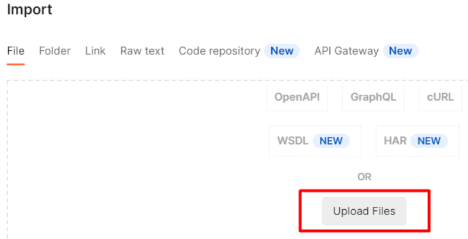

This document describes basic operational procedures for GigaSpaces release 16.2.
On this... page:
Data Integration (DI) allows data to be loaded into the GigaSpaces data grid using easily-defined, reusable Data Pipelines that require no user code.
See the
This introduction consists of four parts:
Part 1 —
Part 2 —
Part 3 —
Part 4 —

In order to install standalone Flink please do the following.
1. Flink should be installed on the same server with Kafka. Download flink version 1.15.0 from here.
2. As gsods OS user, copy the downloaded tar.gz file to the following directory: /home/gsods/di-flink
If DI software should be installed under the different file system or directory , then create a symbolic link from /home/gsods/di-flink to the new installation directory <alternative directory>/di-flink
3. Unzip and open the downloaded flink archive file:
tar -xzf flink-1.15.0-bin-scala_2.12.tgz4. Create a symbolic link latest-flink to the new flink directory:
ln -s flink-1.15.0 latest-flink5. Start Flink as gsods OS user:
cd /home/gsods/di-flink/latest-flink/bin
./start-cluster.sh
6. Flink UI is started on the port 8081. Connect to Flink UI:
http://<flink server>:8081This is a basic Apache Flink installation. More advanced instructions of a Flink configuration in a cluster mode and flink services configuration will be provided later.
In order to install DI Metadata Manager first time do the following.
1. Download the latest DI Metadata Manager tar.gz file
2. Create a directory for DI Metadata Manager software as gsods OS user:
mkdir /home/gsods/di-Metadata Manager3. Copy the downloaded tar.gz to the /home/gsods/di-Metadata Manager directory.
4. Change to the /home/gsods/di-Metadata Manager
cd /home/gsods/di-Metadata Manager5. Unzip and open the downloaded di-Metadata Manager archive file
tar -xzf di-Metadata Manager-<version>.tar.gz6. Create a symbolic link latest-di-Metadata Manager to the newly created directory:
ln -s di-Metadata Manager-<version> latest-di-Metadata Manager7. As root OS user, change to the config directory of the di-Metadata Manager
su - root
cd /home/gsods/di-Metadata Manager/latest-di-Metadata Manager/config
8. Copy di-Metadata Manager service file to the systemd services directory (as root OS user)
cp di-Metadata Manager.service /etc/systemd/system9. Reload systemd configuration (as root OS user)
systemctl daemon-reload10. Start di-Metadata Manager service (as root OS user)
systemctl start di-Metadata Manager11. Monitor the log of the di-Metadata Manager (as gsods OS user)
/home/gsods/di-Metadata Manager/latest-di-Metadata Manager/logs/di-Metadata Manager.log12. DI Metadata Manager service is started on a port 6081, check the DI Metadata Manager rest service
http://<di Metadata Manager>:6081/swagger-uiIn order to install DI Manager first time do the following.
1. Download the latest DI Manager tar.gz file
2. Create a directory for DI Manager software as gsods OS user
mkdir /home/gsods/di-manager3. Copy the downloaded tar.gz to the /home/gsods/di-manager directory
4. Change to the /home/gsods/di-manager directory
cd /home/gsods/di-manager5. Unzip and open the downloaded di-manager archive file
tar -xzf di-manager-<version>.tar.gz6. Create a symbolic link latest-di-manager to the newly created directory
ln -s di-manager-<version> latest-di-manager7. Change the di-manager parameter to point to the correct di-Metadata Manager server (as gsods OS user)
cd /home/gsods/di-manager/latest-di-manager/config
vi di-manager-application.properties8. Change Metadata Manager.server.url to point to the Metadata Manager server
Avoid using localhost but the actual hostname where Metadata Manager is running. Usually DI-Metadata Manager and DI-Manager will be running on the same host.
9. As root OS user change to the configdirectory of the di-manager
su - root
cd /home/gsods/di-manager/latest-di-manager/config10. Copy the di-manager service file to the systemd services directory (as root OS user)
cp di-manager.service /etc/systemd/system11. Reload systemd configuration (as root OS user)
systemctl daemon-reload12. Start the di-manager service (as root OS user)
systemctl start di-manager13. Monitor the log of the di-manager (as gsods OS user)
/home/gsods/di-manager/latest-di-manager/logs/di-manager.log14. DI Manager service is started on port 6080, check the DI Manager rest service
http://<di manager host>:6080/swagger-uiIn order to install new DI package please do the following.
1. Via postman stop active pipelines
2. As gsods OS user, download the new DI package (di-mdm or di-manager) to the /home/gsods/<DI component>
3. For di-mdm, download the new tar.gz package to the /home/gsods/di-mdm directory
4. For the di-manager, download the new tar.gz package to the /home/gsods/di-manager directory
5. As gsods OS user, unzip / untar the newly downloaded package
tar -xzf <new tar file>6. For di-mdm do the following manual steps as gsodsOS user:
cd /home/gsods/di-mdm/<new package>/lib
cp /home/gsods/di-mdm/latest-di-mdm/lib/sqlitesample.db .7. For di-manager do the following manual step as gsods OS user:
tar -xzf di-manager-<version>.tar.gzcd /home/gsods/di-manager/<new package>/config
cp /home/gsods/di-manager/latest-di-manager/config/di-manager-application.properties .The two manual steps shown above will be automated in a future release.
8. As root OS user do the following:
9. Go to the utils directory of the newly installed package
cd /home/gsods/di-mdm/<new package>/utils10. Run the installation script
./install_new_version.shThe installation script does the following:
Stops the running service of the DI component (di-manager, di-mdm)
Changes the symbolic link latest-<di component> to the active package directory
Starts the DI component service
11. As gsods OS user , upload the updated di-processor jar file to the flink
12. Remove the already uploaded di-processor jar file from the flink UI
13. Verify in Postman that environment variable points to the latest Metadata Manager processor jar:

14. Via postman run Configure Flink API:

15. Via postman start a pipeline:
The Postman standalone application can be found very useful in organizing the various DI layer Rest APIs in a correct logical order.
As a first step let's define environment with all required environment variables.
Open Postman.
Go to the Environments tab:

Create a new variables environment:

Provide a name for this new environment , for example “Development”:
|
Variable name |
Example |
Description |
|
managerUrl |
http://di-stage-s1:6080 |
The http URL endpoint of the DI Manager including the port |
|
mdmUrl |
http://di-stage-s1:6081 |
The http URL endpoint of the MDM including the port |
|
flinkUrl |
http://di-stage-kafka1:8081 |
The http URL endpoint of the Flink including port |
|
bootstrapServers |
di-stage-kafka1:9092, di-stage-kafka2:9092, di-stage-kafka3:9092 |
Kafka bootstrap servers including ports. Multiple Kafka servers can be included in a comma separated format |
|
spaceLookupLocators |
di-stage-gs1 |
Space server |
|
spaceLookupGroups |
xap-16.2.0 |
|
|
spaceName |
DEV |
Space name |
|
kafkaGroupId |
diprocessor |
Kafka DI Consumer group name |
|
kafkaTopic_CDC |
pipeline_cdc |
The name of the Kafka topic for CDC changes |
|
kafkaTopic_IL |
pipeline_il |
The name of the Kafka topic for initial load changes |
|
diProcessorJar |
/home/gsods/di-manager/latest-di-manager/lib/job-0.0.7.jar |
The full path of the DI Processor jar |
|
pipelineId |
The ID of the pipeline. This is generated upon pipeline creation and can be retrieved later on via list pipelines REST API GET {{managerUrl}}/api/v1/pipeline/ |
|
|
dbUrl |
JDBC URL to connect to the source database Db2 zos example: jdbc:db2://<IP>:<db port>/<DB location> |
|
|
dbUsername |
DI database user name to connect to the source database |
|
|
dbName |
The name of the source database inside DI internal repository (this can be any name that logically represents the System of Records) |
|
|
dbSchemaName |
The source database schema that owns tables that DI captures changes from |
Postman API collection is a group of APIs organized in a logical order that represents certain product functionality , such as create pipeline, define generic environment, or administer pipeline.
DI Postman collection is released with every DI release and can be imported into the local postman environment.
In order to import released DI collection, proceed as follows.:
Open Postman
Go to the Collections tab and click Import:

In a file tab click on “Upload files” and choose the newly downloaded DI Postman collection file to import from:

At the end of the import you should see a new collection present under the “Collections” tab.

PIC-844 DI Processor Added basic performance metrics report to the InfluxDB
PIC-843 DI Processor performance enhancement to write via distributed task
PIC-909 FlinkConfig has been stored incorrectly and prevented pipeline from starting
PIC-839 DI Processor NULL in a field value causes a parsing error
PIC-903 DI Processor generates unnecessary logging of processed records
PIC-881 DI Manager Fails to start several jobs in parallel for different pipelines because the same job name is used
PIC-858 DI Manager re-deploy DI Processor jar if start job fails with invalid jar id
|
Release date |
20/07/2022 |
|
Previous version |
0.0.8.1 |
|
DI-Manager 0.0.9.1 |
Download link |
|
DI-Metadata Manager 0.0.9.1 |
Download link |
|
Postman collection |
Download link |
PIC-776 Data dictionary fetch from SoR (DB2 ZOS) directly into Metadata Manager
PIC-713 Added ZK as a repository to the Metadata Manager
PIC-765 DI Manager unified REST API to create pipeline and tables mappings
PIC-862 DI Manager start pipeline API - added option to start from a specific Kafka offset
PIC-807 DI Manager - added pipeline control APIs
PIC7-12 DI Manager / DI Metadata Manager - added OpenAPIv3.0 (Swagger)
PIC-872 DI Manager - create Kafka topic if does not exist
PIC-709 DI Processor - implemented pluggable architecture concept to the message parsing structure
PIC-845 DI Manager - automatic conversion from a sourceType to a spaceType
PIC-846 DI Manager - automatic conversion from a spaceType into tableExtraction type
PIC-838 Start pipeline returns always error code 500
|
# |
DI Component |
Protocol : Port |
Accessed by |
Remarks |
|
1 |
IIDR DB2ZOS Agent |
TCP:11801 |
IIDR Windows UI |
|
|
2 |
IIDR Kafka Agent |
TCP:11701 |
IIDR Windows UI |
|
|
3 |
IIDR Access Server |
TCP:10101 |
IIDR Windows UI |
|
|
4 |
Flink server |
HTTP:8081 |
Windows UI DI Manager |
|
|
5 |
Kafka |
TCP:9092 |
Flink server IIDR Kafka Agent |
Flink and Kafka are running on the same server |
|
6 |
Zookeeper |
TCP:2181 |
Metadata Manager |
|
|
7 |
DB2 ZOS |
TCP:<DB port> |
IIDR DB2ZOS Agent Metadata Manager DI Manager |
|
|
8 |
ZOS |
TCP:22 |
IIDR DB2ZOS Agent |
|
|
9 |
DI Manager |
HTTP:6080 |
GS UI (Windows) |
|
|
10 |
Metadata Manager |
HTTP:6081 |
GS UI(Windows) DI Manager Flink Server (DI Processor) |
Metadata Manager and DI Manager are running on the same server |
Need assistance or further information? Don't hesitate to contact us — we're here to help!